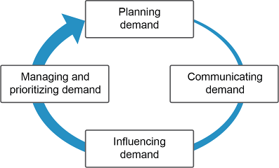

- Planning demand — forecasting + moving beyond prediction to what quantities to produce. Output: the consensus demand plan.
- Communicating demand — sharing demand information internally (supply, finance) and externally (customers, suppliers).
- Influencing demand — shaping demand via pricing, promotions, and product/brand management.
- Managing and prioritizing demand — controlling demand when supply is constrained; allocating limited supply to highest-priority customers.
These components are cyclical and iterative. Exhibit 1-21 shows how the cycle can be shortened at the operational level (e.g., using point-of-sale data directly instead of forecasts — shifting from push to demand-pull).

- Fixed high capacity (planning focus) — meet demand to the maximum extent possible; keep capacity high to avoid stockouts.
- Highly variable capacity (communicating focus) — match supply to demand; flex capacity up/down rapidly based on communicated demand.
- Moderately variable capacity (influencing focus) — level production and use promotions/pricing to shift demand to fill capacity.
- Fixed average capacity (managing/prioritizing focus) — control demand allocation; prioritize customers/orders when supply is constrained.
The demand plan is a consensus forecast — a single, agreed-upon view of future demand used by the entire organization (sales, finance, supply, production). It represents demand both in units and monetary value.

Key inputs: forecasting, product/brand commitments, marketing activities, customer orders, assumptions, and lessons learned.
Uses of the demand plan:
- Drives production scheduling, procurement, and capacity planning.
- Provides sales with availability information (types and quantities).
- Controls and validates departmental plans — holds demand side accountable for inventory consequences.
- Reveals biased inputs or unrealistic assumptions.
Planning horizon: minimum 18 months, revised monthly (rolling re-planning).
- Ensures each period is reviewed multiple times with increasing accuracy.
- Aligns with product/brand management timelines (typically 18+ months).
- Provides enough lead time to approve and execute capacity changes.
- By midyear, feeds the next year’s annual business planning process.
Effective demand communication reduces bullwhip effect variability by sharing timely, accurate demand information with all supply chain partners.
3 Principles of Effective Communication (Exhibit 1-23):

- Communicate soon — timely information has far greater value than delayed information. Bad news is especially important to communicate early.
- Structure communications — formalize recurring communication flows so they cannot be skipped. Exhibit 1-24 shows required two-way communications in the demand planning process.
- Focus communications — each person receives only what they need to make informed decisions (no overload, no gaps).

The demand manager is a full-time role that serves as the focal point for all demand communications. Responsibilities:
- Gather demand volume and timing data by product, family, and/or customer segment.
- Perform analytical work on the demand plan.
- Build consensus on the demand plan.
- Communicate demand information to/from all stakeholders (supply, finance, marketing, key customers).
- May lead the S&OP process by creating demand scenarios.

Demand dashboards are software presentations of key performance indicators used to focus communications. Key elements to include:
- Historical demand (3+ months) with KPIs and metrics.
- Demand plan for next 18+ months (vs. prior plan and statistical forecast).
- Assumptions and pricing assumptions.
- Planned branding, marketing, and promotions activities.
- Key risks, opportunities, economic trends, and competitor actions.
- Subtleties, uncertainties, events, and decisions made.

Click card to flip · Use arrows or shuffle to practise